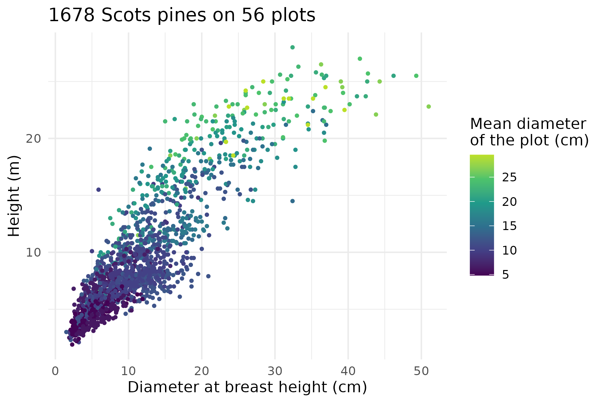
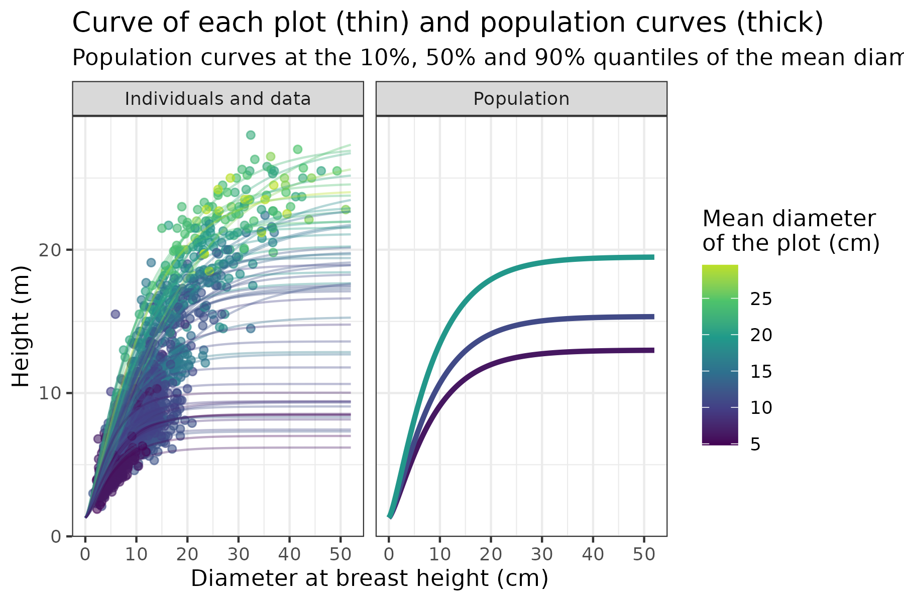
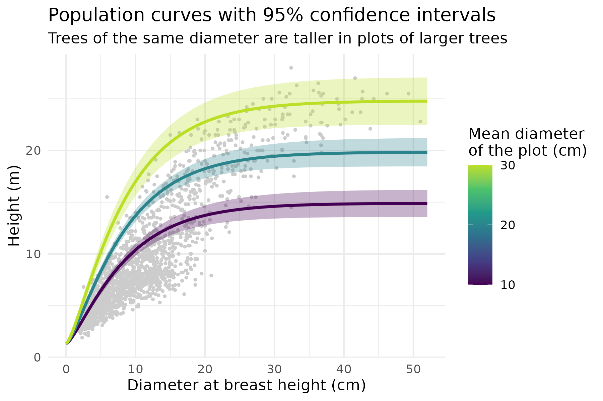
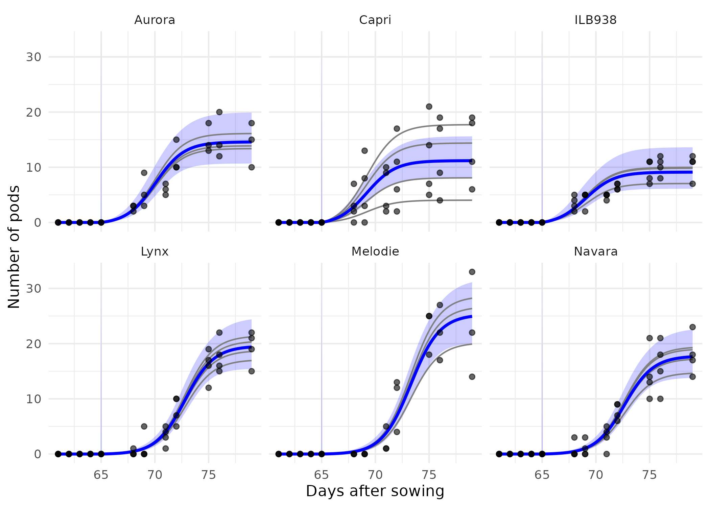
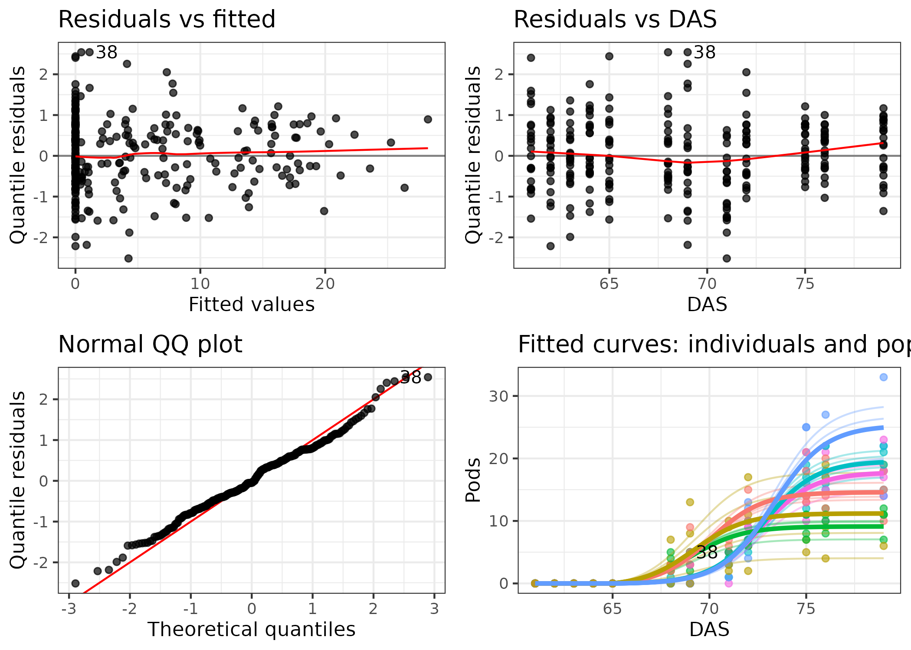

Fixed and random effects
2026-11-26
Source:vignettes/fixed-random-effects.Rmd
fixed-random-effects.RmdThis vignette covers covariates (fixed effects) and random effects of the parameters of the growth curves, and likelihood ratio tests of their inclusion, for a height-diameter model of Scots pine trees and for counts of pods of faba bean plants. The growth models and their parameters are introduced in the vignette Growth models and their parameters.
The height-diameter model
The heights of the pines of PineHeightDiameter (see
?PineHeightDiameter) grow with their diameter towards an
asymptote, from the breast height of 1.3 m at which the diameter is
measured. The Chapman-Richards curve with the intercept
fixed describes this (Kuželka and Marušák, 2015):
with the asymptote above breast height, the rate and the shape (Richards, 1959).
library(gcTMB)
library(ggplot2)
fit <- gcTMB(Height ~ DBH, data = PineHeightDiameter, model = "chapmanrichards", start = c(b4 = 1.3))
summary(fit)
#> Call:
#> gcTMB(form = Height ~ DBH, data = PineHeightDiameter, start = c(b4 = 1.3),
#> model = "chapmanrichards")
#>
#> Model: chapmanrichards
#> Family: gaussian, identity link for all parameters
#>
#> Number of observations: 1678
#> Log-likelihood: -3872 (df = 4), AIC: 7752, BIC: 7774
#>
#> Coefficients:
#> Estimate Std. Error t value Pr(>|t|)
#> b1:(Intercept) 45.718676 5.905109 7.742 1.68e-14 ***
#> b2:(Intercept) 0.019653 0.004045 4.859 1.29e-06 ***
#> b3:(Intercept) 1.059781 0.043127 24.574 < 2e-16 ***
#> ---
#> Signif. codes: 0 '***' 0.001 '**' 0.01 '*' 0.05 '.' 0.1 ' ' 1
#> Fixed: b4:(Intercept) = 1.3
#>
#> Residual standard deviation: 2.434 on 1675 degrees of freedom
#>
#> Optimiser: relative convergence (4), maximum absolute gradient 0.00028
ggplot(PineHeightDiameter, aes(x = DBH, y = Height, colour = Dmean)) +
geom_point(size = 0.8) +
scale_colour_viridis_c(end = 0.9) +
labs(x = "Diameter at breast height (cm)", y = "Height (m)", colour = "Mean diameter\nof the plot (cm)",
title = "1678 Scots pines on 56 plots") +
theme_minimal()
Covariates and random effects
Covariates on the parameters are given by fform,
e.g. b1 ~ Dmean for an asymptote that depends on the mean
diameter of the plot: trees of the same diameter are taller in plots of
larger trees, a generalised height-diameter model. Random effects are
given by rform, e.g. b1 + b2 ~ 1 | Plot for
correlated random effects of each plot on the asymptote and on the rate,
which account for the trees of a plot sharing their site and stand.
fitdm <- gcTMB(Height ~ DBH, fform = b1 ~ Dmean, data = PineHeightDiameter, model = "chapmanrichards",
start = c(b4 = 1.3))
fitre <- gcTMB(Height ~ DBH, fform = b1 ~ Dmean, rform = b1 + b2 ~ 1 | Plot, data = PineHeightDiameter,
model = "chapmanrichards", start = c(b4 = 1.3))
summary(fitre)
#> Call:
#> gcTMB(form = Height ~ DBH, fform = b1 ~ Dmean, rform = b1 + b2 ~
#> 1 | Plot, data = PineHeightDiameter, start = c(b4 = 1.3),
#> model = "chapmanrichards")
#>
#> Model: chapmanrichards
#> Family: gaussian, identity link for all parameters
#>
#> Number of observations: 1678, groups: Plot 56
#> Log-likelihood: -2541 (df = 8), AIC: 5098, BIC: 5142
#>
#> Coefficients:
#> Estimate Std. Error z value Pr(>|z|)
#> b1:(Intercept) 8.647053 1.117374 7.739 1.00e-14 ***
#> b1:Dmean 0.495045 0.064643 7.658 1.89e-14 ***
#> b2:(Intercept) 0.138444 0.009514 14.551 < 2e-16 ***
#> b3:(Intercept) 1.399270 0.060408 23.164 < 2e-16 ***
#> ---
#> Signif. codes: 0 '***' 0.001 '**' 0.01 '*' 0.05 '.' 0.1 ' ' 1
#> Unadjusted Wald tests; tests of the differences between curves adjusted for their number: partest().
#> Fixed: b4:(Intercept) = 1.3
#>
#> Random effects:
#> Groups Name Std.Dev. Corr
#> Plot b1 4.30895
#> b2 0.04967 -0.90
#>
#> Residual standard deviation: 0.9868
#>
#> Optimiser: relative convergence (4), maximum absolute gradient 0.00046Testing the fixed effects
Likelihood ratio tests by anova() compare nested models,
here with and without the effect of the mean diameter.
fitre0 <- gcTMB(Height ~ DBH, rform = b1 + b2 ~ 1 | Plot, data = PineHeightDiameter, model = "chapmanrichards",
start = c(b4 = 1.3))
#> Warning in nlminb(start = obj$par, objective = obj$fn, gradient = obj$gr, :
#> NA/NaN function evaluation
anova(fitre0, fitre)
#> Likelihood ratio tests of gcTMB models
#>
#> npar AIC BIC logLik deviance LR Df Pr(>LR)
#> fitre0 7 5140.9 5178.9 -2563.5 5126.9
#> fitre 8 5098.3 5141.7 -2541.2 5082.3 44.594 1 2.424e-11 ***
#> ---
#> Signif. codes: 0 '***' 0.001 '**' 0.01 '*' 0.05 '.' 0.1 ' ' 1For gaussian (and lognormal) models without random effects,
test = "F" gives F-tests as for nls(): the
reduction of the residual sum of squares per additional parameter,
divided by the residual mean square of the larger model. The F-test
accounts for the estimation of the residual variance, which the
likelihood ratio test does not, and is preferable for small data sets;
here for the models without random effects:
anova(fit, fitdm, test = "F")
#> F-tests of gcTMB models
#>
#> npar AIC BIC logLik Res.Df RSS F Df Pr(>F)
#> fit 4 7752.3 7774.0 -3872.1 1675 9923.6
#> fitdm 5 7052.0 7079.1 -3521.0 1674 6530.0 869.99 1 < 2.2e-16 ***
#> ---
#> Signif. codes: 0 '***' 0.001 '**' 0.01 '*' 0.05 '.' 0.1 ' ' 1The model without random effects treats the 1678 trees as independent, while the trees of a plot are alike, so its tests are too optimistic; the test with the random effects is the one to use.
Testing the random effects
The random effects are tested in the same way, by likelihood ratio
tests of the models with and without them: here without random effects,
with a random asymptote, and with random asymptotes and rates. Some of
these fits need control = list(restart = TRUE) to converge
(see the overview vignette("gcTMB")).
fitre1 <- gcTMB(Height ~ DBH, fform = b1 ~ Dmean, rform = b1 ~ 1 | Plot, data = PineHeightDiameter,
model = "chapmanrichards", start = c(b4 = 1.3), control = list(restart = TRUE))
anova(fitdm, fitre1, fitre)
#> Likelihood ratio tests of gcTMB models
#>
#> npar AIC BIC logLik deviance LR Df Pr(>LR)
#> fitdm 5 7052.0 7079.1 -3521.0 7042.0
#> fitre1 6 5435.6 5468.2 -2711.8 5423.6 1618.38 1 < 2.2e-16 ***
#> fitre 8 5098.3 5141.7 -2541.2 5082.3 341.31 2 < 2.2e-16 ***
#> ---
#> Signif. codes: 0 '***' 0.001 '**' 0.01 '*' 0.05 '.' 0.1 ' ' 1Under the smaller model, a standard deviation of the random effects
is zero, on the boundary of its range, so the chi-square distribution of
the likelihood ratio statistic is conservative: for a single standard
deviation, the p-value is about twice the correct one. Both random
effects are needed here anyway. test = "boot" gives a
parametric bootstrap likelihood ratio test, which simulates from the
smaller model and does not rely on the chi-square distribution; it fits
both models to each simulation and takes several minutes:
anova(fitre1, fitre, test = "boot", nsim = 100, seed = 1)The random effects of b1 + b2 ~ 1 | Plot are correlated,
and those of b1 + b2 ~ 1 || Plot independent; the
likelihood ratio test of the two tests their correlation:
fitred <- gcTMB(Height ~ DBH, fform = b1 ~ Dmean, rform = b1 + b2 ~ 1 || Plot, data = PineHeightDiameter,
model = "chapmanrichards", start = c(b4 = 1.3), control = list(restart = TRUE))
#> Warning in nlminb(start = obj$par, objective = obj$fn, gradient = obj$gr, :
#> NA/NaN function evaluation
anova(fitred, fitre)
#> Likelihood ratio tests of gcTMB models
#>
#> npar AIC BIC logLik deviance LR Df Pr(>LR)
#> fitred 7 5145.5 5183.4 -2565.7 5131.5
#> fitre 8 5098.3 5141.7 -2541.2 5082.3 49.134 1 2.391e-12 ***
#> ---
#> Signif. codes: 0 '***' 0.001 '**' 0.01 '*' 0.05 '.' 0.1 ' ' 1
VarCorr(fitre)
#> $Plot
#> b1 b2
#> b1 18.5670869 -0.192100461
#> b2 -0.1921005 0.002467342
#> attr(,"stddev")
#> b1 b2
#> 4.30895427 0.04967235
#> attr(,"correlation")
#> b1 b2
#> b1 1.0000000 -0.8975152
#> b2 -0.8975152 1.0000000
#>
#> attr(,"sc")
#> [1] 0.9867602The Korf curve, (Kuželka and Marušák, 2015), with the same fixed and random effects, is an alternative height-diameter model, as flexible as Chapman-Richards through its shape . The shape must be larger than 1, and its default link log keeps it there; on these data it is pulled towards 1, where the curve becomes a power curve without an asymptote. The Chapman-Richards and Korf models are not nested, and are compared by their AIC:
Plotting the curves
plot() with type = "curves" draws the curve
of each plot and the population curves; predict() gives the
population curves with confidence intervals, here for plots with small,
medium and large trees:
p <- plot(fitre, type = "curves", times = seq(0, 52, by = 0.2), draw = FALSE)
p$curves + labs(x = "Diameter at breast height (cm)", y = "Height (m)", colour = "Mean diameter\nof the plot (cm)",
title = "Curve of each plot (thin) and population curves (thick)",
subtitle = "Population curves at the 10%, 50% and 90% quantiles of the mean diameter")
nd <- expand.grid(DBH = seq(0, 52, by = 0.2), Dmean = c(10, 20, 30))
nd <- cbind(nd, predict(fitre, newdata = nd, random = FALSE, interval = "confidence"))
ggplot(PineHeightDiameter, aes(x = DBH, y = Height)) +
geom_point(colour = "grey80", size = 0.6) +
geom_ribbon(data = nd, aes(x = DBH, ymin = lwr, ymax = upr, group = Dmean, fill = Dmean), inherit.aes = FALSE, alpha = 0.3) +
geom_line(data = nd, aes(y = fit, group = Dmean, colour = Dmean), linewidth = 1) +
scale_colour_viridis_c(end = 0.9, breaks = c(10, 20, 30), aesthetics = c("colour", "fill")) +
labs(x = "Diameter at breast height (cm)", y = "Height (m)", colour = "Mean diameter\nof the plot (cm)",
fill = "Mean diameter\nof the plot (cm)", title = "Population curves with 95% confidence intervals",
subtitle = "Trees of the same diameter are taller in plots of larger trees") +
theme_minimal()
Non-normal responses
The family argument gives the distribution of the
response: “gaussian”, “lognormal”, “poisson”, “nbinom2”, “nbinom1”,
“binomial”, “betabinomial” or “beta”. The pods of
FabaCounts23 (see ?FabaCounts23) are zero at
the first counts, so the threshold
,
the time of the first pods, is identified by the zero counts and
estimated. A Poisson model with an asymptote and a time of the maximum
growth rate for each genotype, and a random asymptote for each
plant:
fitp <- gcTMB(Pods ~ DAS, fform = b1 + b2 ~ Genotype, rform = b1 ~ 1 | Tube_ID, data = FabaCounts23,
family = "poisson", fix = c(b4 = FALSE))
summary(fitp)
#> Call:
#> gcTMB(form = Pods ~ DAS, fform = b1 + b2 ~ Genotype, rform = b1 ~
#> 1 | Tube_ID, data = FabaCounts23, fix = c(b4 = FALSE), family = "poisson")
#>
#> Model: logistic, truncated at the threshold b4
#> Family: poisson, identity link for all parameters
#>
#> Number of observations: 263, groups: Tube_ID 22
#> Log-likelihood: -353.6 (df = 15), AIC: 737.1, BIC: 790.7
#>
#> Coefficients:
#> Estimate Std. Error z value Pr(>|z|)
#> b1:(Intercept) 14.5996 2.3239 6.282 3.34e-10 ***
#> b1:GenotypeCapri -3.4020 2.9743 -1.144 0.25270
#> b1:GenotypeILB938 -5.4787 2.9575 -1.852 0.06396 .
#> b1:GenotypeLynx 4.9820 3.2331 1.541 0.12334
#> b1:GenotypeMelodie 10.6976 3.6762 2.910 0.00361 **
#> b1:GenotypeNavara 3.1797 3.1856 0.998 0.31821
#> b2:(Intercept) 70.0533 0.4689 149.394 < 2e-16 ***
#> b2:GenotypeCapri -0.8504 0.6405 -1.328 0.18424
#> b2:GenotypeILB938 -1.0084 0.7024 -1.436 0.15110
#> b2:GenotypeLynx 2.7439 0.5512 4.978 6.42e-07 ***
#> b2:GenotypeMelodie 3.2443 0.5515 5.882 4.05e-09 ***
#> b2:GenotypeNavara 2.6005 0.5584 4.657 3.21e-06 ***
#> b3:(Intercept) 1.3389 0.1494 8.961 < 2e-16 ***
#> b4:(Intercept) 65.0000 0.0239 2719.707 < 2e-16 ***
#> ---
#> Signif. codes: 0 '***' 0.001 '**' 0.01 '*' 0.05 '.' 0.1 ' ' 1
#> Unadjusted Wald tests; tests of the differences between curves adjusted for their number: partest().
#>
#> Random effects:
#> Groups Name Std.Dev.
#> Tube_ID b1 3.355
#>
#> Optimiser: converged, with the threshold b4 at an observation time (a kink of the likelihood), maximum absolute gradient 3.2
genotypes <- data.frame(Genotype = sort(unique(FabaCounts23$Genotype)))
cbind(genotypes, predict(fitp, newdata = genotypes, type = "parameters", random = FALSE))
#> Genotype b1 b2 b3 b4
#> 1 Aurora 14.599634 70.05332 1.338935 65
#> 2 Capri 11.197618 69.20292 1.338935 65
#> 3 ILB938 9.120981 69.04494 1.338935 65
#> 4 Lynx 19.581583 72.79718 1.338935 65
#> 5 Melodie 25.297268 73.29758 1.338935 65
#> 6 Navara 17.779358 72.65387 1.338935 65All the counts with the fitted curve of each plant, with its predicted random asymptote:
days <- seq(61, 79, by = 0.05)
ndp <- merge(unique(FabaCounts23[, c("Tube_ID", "Genotype")]), data.frame(DAS = days))
ndp$fit <- predict(fitp, newdata = ndp)
ggplot(FabaCounts23, aes(x = DAS, y = Pods, colour = Genotype)) +
geom_point() +
geom_line(data = ndp, aes(y = fit, group = Tube_ID)) +
labs(x = "Days after sowing", y = "Number of pods", colour = "Genotype") +
theme_minimal()
By genotype, the curves of the plants together with the population
curves of the genotypes (random = FALSE), the fixed
effects, with 95% confidence intervals. For Poisson models, the
confidence intervals of the mean are computed on the log scale, so that
they stay positive.
# the population curve of each genotype
ndg <- merge(genotypes, data.frame(DAS = days))
ndg <- cbind(ndg, predict(fitp, newdata = ndg, random = FALSE, interval = "confidence"))
ggplot(FabaCounts23, aes(x = DAS, y = Pods)) +
geom_ribbon(data = ndg, aes(x = DAS, ymin = lwr, ymax = upr), inherit.aes = FALSE, fill = "blue", alpha = 0.2) +
geom_line(data = ndp, aes(y = fit, group = Tube_ID), colour = "grey50") +
geom_line(data = ndg, aes(y = fit), colour = "blue", linewidth = 1) +
geom_point(alpha = 0.6) +
facet_wrap(~ Genotype) +
labs(x = "Days after sowing", y = "Number of pods") +
theme_minimal()
The estimated threshold improves the fit over the default threshold at sowing:
fitp0 <- gcTMB(Pods ~ DAS, fform = b1 + b2 ~ Genotype, rform = b1 ~ 1 | Tube_ID, data = FabaCounts23,
family = "poisson")
AIC(fitp0, fitp)
#> df AIC
#> fitp0 14 745.3067
#> fitp 15 737.1423Checking a count model
For count data the Pearson residuals are not normal, even for a
correct model. plot() therefore uses randomised quantile
residuals by default (Dunn and Smyth, 1996). Each residual is the fitted
distribution function at the observation,
,
mapped to the normal scale with
.
For counts,
jumps at each integer, so a value is drawn uniformly between
and
.
Under the model the residuals are standard normal, so the QQ plot is
compared with the identity line. The draws are random, and
seed makes the plots reproducible.
plot(fitp, seed = 1)
The simulations of simulate() can also be used for
simulation-based residuals, for example with the package DHARMa (Hartig,
2026) and its function createDHARMa(). With
random = FALSE, the simulations are conditional on the
predicted random effects, like the residuals of plot(), and
the simulation-based residuals are then essentially the same as the
quantile residuals. With random = TRUE, new random effects
are drawn for each simulation. Note that random means the
opposite in fitted() and residuals(), where
random = TRUE includes the predicted random effects.
References
Dunn, P.K. and Smyth, G.K. (1996). Randomized quantile residuals. Journal of Computational and Graphical Statistics 5, 236–244. doi:10.1080/10618600.1996.10474708.
Hartig, F. (2026). DHARMa: Residual Diagnostics for Hierarchical (Multi-Level / Mixed) Regression Models. R package version 0.5.1, doi:10.32614/CRAN.package.DHARMa.
Kuželka, K. and Marušák, R. (2015). KORFit: An efficient growth function fitting tool. Computers and Electronics in Agriculture 116, 187–190. doi:10.1016/j.compag.2015.07.001.
Richards, F.J. (1959). A flexible growth function for empirical use. Journal of Experimental Botany 10, 290–300.